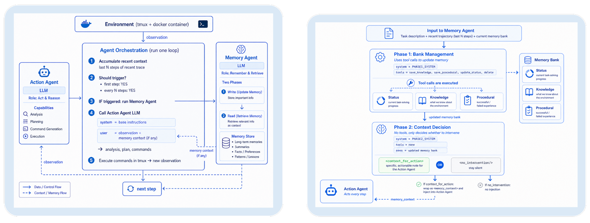

01研究背景与问题定义
长程智能体在任务推进过程中，可能重复尝试已经失败的命令，或逐渐偏离先前确认的用户要求。此时，相关信息虽然仍保存在交互历史中，却已经无法持续约束后续决策；论文将这种信息仍在历史里，却不再影响行动的现象称为“行为状态衰减”（behavioral state decay）。扩展上下文窗口或建立记忆库能够增加可用信息，但仍需解决一个问题：在什么时刻，应该让哪条旧信息重新进入决策过程？如果每一步都展示全部记忆，又会引入额外干扰与开销。
核心创新：把记忆取用变成选择性干预
针对这一缺口，论文把“保存什么”与“现在提醒什么”分成两个决定：由独立的记忆代理观察近期执行轨迹、维护值得保留的状态，再根据当前进展判断，是否需要向执行器的下一次调用提供简短提醒。这样，执行器仍沿用原有行动流程，而记忆代理通过有选择地介入，让暂时退出注意范围的旧信息在需要时重新发挥作用；当没有值得补充的内容时，它也可以保持沉默。
| 要解决的问题 | 设计选择及作用 |
|---|---|
| 执行状态随任务推进而散失或过期 | 分别维护事实、尝试及结果、私人状态，支持更新与删除，保留可继续使用的记录。 |
| 记忆存在，但没有及时影响决定 | 选择有记忆依据的针对性提醒，或保持沉默，避免整库暴露和无差别重发。 |
这种设计把记忆维护与行动时机联系起来，因此收益既取决于记录是否准确，也取决于提醒是否及时、相关：漏掉关键提醒可能使旧错误重现，过多提醒则可能干扰当前工作。这里的“主动”具体指记忆代理可以决定是否介入，并不意味着调用时机也已实现自适应；主实验仍按固定间隔调用记忆代理，再由它选择提醒或沉默。
02方法与技术路线
为了实现上述分工，系统在执行器旁边增加了独立的记忆代理：执行器继续承担推理、工具调用与环境反馈处理，记忆代理则维护执行状态，并判断其中哪些信息值得临时提供给下一次执行调用。两者通过先更新记忆库、再选择提醒、最后由执行器行动的顺序协作，使提醒依据的是已经修订的状态，而实际动作仍由执行器决定。
横向滑动查看全图
实线表示执行与控制顺序，虚线表示状态读写或上下文传递。调用调度与是否发出提醒是两个决定。
展开论文原图｜系统接入与两阶段工作流

结构化记忆库：把工作认识、稳定事实和尝试结果分开
记忆代理每次调用时都会接收任务描述、近期交互窗口和当前记忆库，其中窗口用于了解刚发生的变化，记忆库则承接窗口之外仍值得保留的执行状态。两者结合后，代理可以在已有认识上继续维护任务进展，无须每次都从完整历史重新提炼。为区分不同信息的用途，库内进一步划分为以下三类内容，并为它们设置不同的可见性边界。
| 组成 | 保存内容 | 为什么单独维护 |
|---|---|---|
| status · 私人状态 | 进度、未解决问题与风险的工作认识 | 供记忆代理判断提醒需求，不直接展示给执行器。 |
| knowledge · 知识记录 | 任务约束、已确认环境事实、路径与配置等 | 持续提供判断依据，避免稳定要求被近期操作淹没。 |
| procedural · 程序经验 | 尝试过的命令、失败原因、排除的假设与成功修复 | 保留“做过什么、结果如何”，减少重复探索。 |
这些记录带有短标识，后续便可针对具体记录进行更新或删除，使过期认识得到修订，而不是不断叠加到旧内容之后。与此同时，将尝试及其结果单独保存，也有助于区分“某次操作失败”与“无条件成立的环境规律”。不过，内容如何归类、某条认识是否失效，仍需由模型判断；结构化记忆库明确了操作方式与职责边界，并不会自动验证记录的事实准确性。
Phase 1：模型提出编辑，框架按顺序更新持久库
第一阶段通过受限的工具调用表达对记忆库的编辑，包括更新私人状态、保存知识、保存程序经验，以及按标识删除旧记录。框架随后依次执行这些调用，形成供第二阶段使用的新记忆库；如果模型没有提出任何调用，原库就继续保留。这种局部编辑方式将模型与程序的职责分开：模型判断哪些信息需要保留或修订，框架则负责把这些判断落实为明确的状态变化，无须每次重新生成整篇历史摘要。
将库维护安排在提醒选择之前，是为了让新发现的错误原因能够先写入、已经失效的记录能够先删除，从而减少第二阶段依据旧状态发出过期提醒的风险。不过，这一顺序只明确了编辑与取用的先后关系；论文既没有将编辑接口定义为整库事务，也没有提供自动核验每条记录语义的机制，因此工具调用符合接口要求，并不等于写入的内容已经可靠。
Phase 2：只选择当次提醒，也可以保持沉默
在持久库更新完成后，第二阶段结合新库与近期轨迹，判断是否有已知信息值得在下一步行动前提醒执行器。判断的重点是这些信息能否影响当前决定，例如某项旧约束可能被违背、眼前错误已有诊断、同一路径此前已经失败，或尚未完成的子目标被忽略。如果模型认为有必要介入，就将相关状态组织成简短、可行动的提醒；如果没有这样的信息，则返回显式的空干预，而不再修改记忆库。
选出的提醒会作为独立的临时记忆上下文交给执行器的下一次调用，执行器的基础提示、工具与解码过程则保持原样。由于整库及私人状态不会随提醒一起注入，执行器接收到的是经过选择的补充信息，这段信息也不应被当作永久策略。为了维持这一职责边界，提示要求提醒以已经维护的信息为依据，避免重复眼前观察或扩展成全面规划；但这些仍是对模型输出的要求，能否落实取决于模型实际生成的内容。
上述选择发生在记忆代理被调用之后，因此“何时调用代理”和“调用后是否发出提醒”需要分别理解。主实验在第一步及之后的每一步都调用记忆代理，并向其提供最近 8 条消息，但每次调用仍允许它选择沉默。论文还提出，可以根据错误、重复命令或上下文变化来触发调用；这些属于可扩展方向，不能据此认为主实验已经实现了自适应调用调度。
展开示例｜一条旧约束怎样在下一次行动前重新生效
机制示例，依据论文流程构造，非实验轨迹。
先前状态：用户要求保留现有接口，但执行器在排查另一处错误后，准备通过修改接口绕过问题。此时，知识库中仍保存着原始要求，程序经验中则记录着已经排除的修复路径，为后续提醒提供依据。
维护与选择：Phase 1 先将最新诊断写入记忆库，Phase 2 再结合近期轨迹，发现当前方向可能违背用户要求，于是选择提醒“接口需要保留，先前已排除的路径也不必重试”；如果近期决定没有这些风险，代理就可以保持沉默。
实际影响：执行器在下一次调用中读到提醒后，仍需自行决定具体动作。因此，这次介入提供的是决策所需的信息，既没有代替执行器完成修改，也不会自动成为此后每一步都保留的上下文。
可选学习路径：训练记忆政策，执行器保持固定
上述架构可以直接通过提示运行，论文还探索了进一步训练记忆代理的路径，同时保持执行器固定。训练先用监督微调（SFT）模仿提示模型生成的记忆库操作及“提醒／沉默”决定，使代理学会使用接口并遵循记忆管理要求；随后再用 GRPO，根据任务验证器给出的奖励调整干预政策，将优化目标从模仿既有行为推进到改善下游任务效果。
具体而言，论文使用 SETA 任务训练开源记忆代理，并始终冻结执行器。由于任务级奖励较为稀疏，而一个回合又包含多次记忆调用，训练将更新重点放在离线运行轨迹中标注的关键转折轮次，以聚焦可能影响任务结果的干预决定。这部分在原文中被定位为初步探索，因此需要与前面的提示式运行区分：两阶段架构本身不依赖训练，提示版本取得的收益也不能全部归因于学习得到的政策。
03实验设计与结果分析
提醒架构是否帮助不同强度的执行器？
主实验在 Terminal-Bench 中统计了 85 个基线与记忆版本均有效的配对任务，并排除 4 个与代理行为无关的容器失败；τ² 则覆盖航空 50 个、零售 114 个和电信 114 个任务。下表中的 τ² 总分按任务数加权，因此各领域对总分的影响并不相同，不能直接与三域等权平均混用。
| 基准 / 执行器 | 基线 | 加记忆 | 变化 |
|---|---|---|---|
| Terminal-Bench / Sonnet 4.5 | 37.6 | 45.9 | +8.3 pp |
| Terminal-Bench / Opus 4.6 | 43.5 | 45.9 | +2.4 pp |
| τ² 任务加权 / Sonnet 4.5 | 55.0 | 61.8 | +6.8 pp |
| τ² 任务加权 / Opus 4.6 | 66.2 | 68.7 | +2.5 pp |
从配对结果看，较弱执行器的提升更大，而较强执行器仍有收益，说明这套提醒架构在两种能力水平上都可能提供帮助。不过，总体提升并不意味着每个领域都会改善：Opus 4.6 在航空子集上的分数仍为 76%→76%。因此，主结果支持的是所测任务分布上的整体有效性，不能据此推断每次介入或每个领域都会受益。
选择性介入是否必然优于强制提醒？
| 变体 | pass@1 % |
|---|---|
| 基线 | 55.0 |
| 完整记忆代理 | 61.2 |
| 每步暴露全库 | 58.6 |
| 强制每步提醒 | 61.5 |
| 仅提醒、没有持久库 | 60.8 |
消融结果中，每步暴露全库的分数低于完整记忆代理，支持在所测条件下筛选记忆的价值；但强制每步提醒的任务加权分数略高于完整政策，因此还不能据此认定，允许沉默就一定能提高最终成功率。完整政策在三域等权平均下反而更高，是因为航空、零售、电信的任务数不同：按领域等权和按任务数加权，会给各领域表现分配不同权重，从而可能改变方法的排名。评价提醒政策时，需要先明确所关心的任务分布，再判断哪种介入方式更合适。
这些结果还需要结合实验批次与调用成本来理解。主结果表中 Sonnet 4.5 的 61.8 与独立消融实验中的 61.2 来自不同实验，不能拼接成同一次运行的结果；与此同时，每个记忆调用步都增加了两阶段模型调用，执行器保持固定并不意味着整体开销很低。因此，选择性介入是否值得，还取决于它能否在目标任务分布下，以合适的提醒成本取得所需的成功率。
04贡献、局限与综合评价
核心贡献：记忆不等于存储，取用是一项控制行为
这项工作的核心贡献，是将持久记录的维护与当次行动前的干预分开，使记忆正确性、提醒相关性和执行自主性能够分别得到讨论。私人状态仅供记忆代理使用，也为其临时判断与执行器实际接收的信息划出了边界，减少了未经筛选的假设直接进入行动上下文的机会。由此形成的控制接口具有可迁移性：即使具体模型或工具发生变化，“哪些信息值得保留”与“此刻哪些信息应当影响行动”仍然是需要分别处理的问题。
未决问题：收益来自记忆，还是更强的旁路顾问？
不过，现有收益究竟有多少来自持久记忆，仍需进一步辨别。主实验采用 Opus 4.6 作为记忆代理，较弱的执行器可能同时受益于更强模型提供的即时建议；消融中仅提醒、没有持久库的变体，也已取得接近完整方法的任务加权分数。这两点共同提示，持久状态维护与额外推理预算的作用尚未被充分分离，因此不能把全部增益都解释为解决了遗忘。
要区分这两种解释，更有说服力的后续比较应当对齐辅助模型的调用预算，再比较无库顾问、结构化记忆，以及随机或规则触发的介入方式，同时统计提醒中确实来自近期窗口之外的证据比例。如果收益主要出现在旧信息被重新激活的任务上，就更能支持持久记忆的作用；如果只看近期窗口的顾问已经能够追平，现有方法的有效性就更可能来自旁路建议。
即使确认了提醒的作用，何时选择沉默仍需要单独评价，因为不必要的提醒会增加干扰与费用，漏掉关键提醒则可能导致不可逆动作，两类错误的代价并不对称。当前结果主要衡量任务是否完成，尚未直接呈现两类错误的校准关系；后续若按风险等级分层，并在相同成功率下比较提醒次数与费用，就更容易判断代理是否学会了“何时值得说”，而非主要在容易任务上减少输出。
综合现有证据，独立记忆干预能够改善部分长程任务，但效果仍受任务分布、辅助模型能力和调用成本影响。值得借鉴的是，将记忆管理落实为一个连接持久状态与当前决策的控制接口；至于持久库本身贡献了多少收益，以及何时介入最划算，仍需要在对齐推理预算和风险代价的条件下进一步验证。